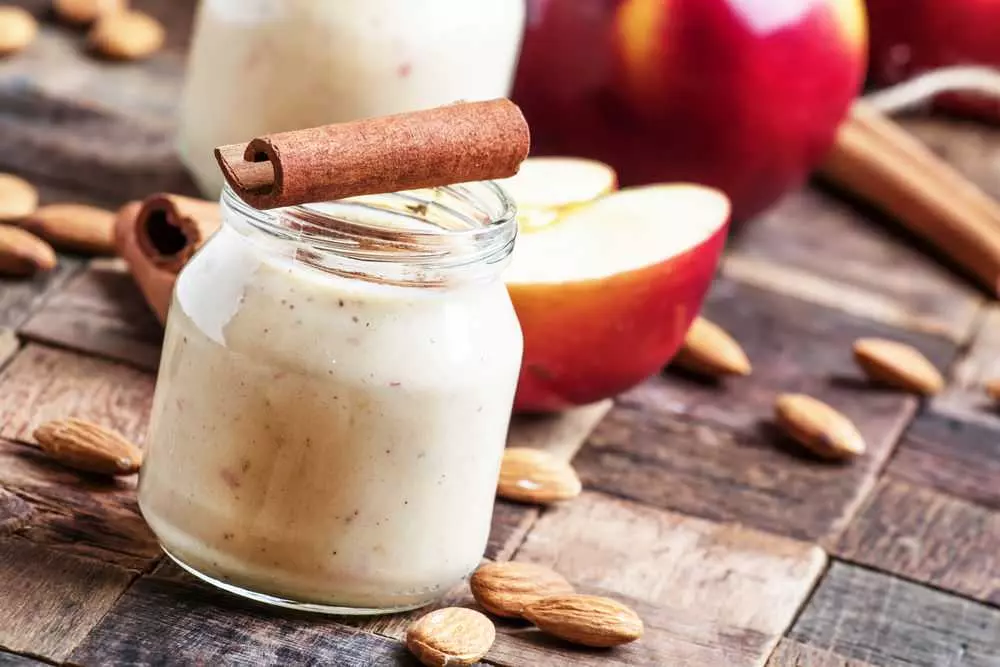

Protein Shake Tarifleri
Protein shake, protein tozu tüketimini daha lezzetli ve pratik hale getirir. Hazırlanmasının kolay olması ve sporcunun yanında taşımasına izin vermesi, protein shakeleri benzersiz kılar. Whey protein ile hazırlanan shake çeşitleri genellikle antrenman sonrası tercih edilir. Whey protein sindirimi hızlıdır ve tüketildikten hemen sonra proteinler amino asitlere parçalanarak hasar gören kas hücrelerinin onarımı için kullanılır. Antrenman sonrasına ek olarak günün her saati hatta öğün yerine de tüketebilirsiniz. Kazein protein tozu ile hazırlanan içecekler, kazeinin geç sindirilme özelliğinden dolayı gece öğünü olarak tüketilmelidir. Vegan ya da vejetaryen beslenme programına sahipseniz bitkisel protein tozu çeşitlerini tercih edebilirsiniz. İşte sizler için en pratik ve en lezzetli protein shake tarifleri:
Çikolatalı Fıstık Ezmeli Shake
Ana protein kaynağı olarak yoğurdun kullanıldığı bu enfes shake, kas kütlesini artırmak isteyenler için eşsiz bir seçenektir. Whey protein kullanılarak hazırlanan 1 porsiyon çikolatalı fıstık ezmeli shake yaklaşık 587 kalori, 40 gram protein, 23 gram yağ ve 65 gram karbonhidrat içerir.
Malzemeler:
• 1 su bardağı yaklaşık 180 mililitre süt
,• 1 su bardağı yaklaşık 180 mililitre yoğurt
• 1 büyük boy muz
• 3 yemek kaşığı yaklaşık 21 gram kakao
• 1 yemek kaşığı yaklaşık 21 gram bal
• 1 yemek kaşığı yaklaşık 16 gram fıstık ezmesi
• 1 ölçek protein tozu yaklaşık 10 gram
Hazırlanışı:
• Muzu soyun ve küçük dilimlere ayırın.
• Kakao haricindeki tüm malzemeleri blendere alın ve yükse hızda pürüzsüz bir kıvam alıncaya kadar karıştırın.
• Karıştırma sırasında kakaoyu yavaş yavaş ekleyerek topaklanmasını önleyebilirsiniz.
• Karışım pürüzsüz bir kıvam alınca büyük bir bardağa alabilirsiniz.
Kahveli Protein Shake
Kahvedeki kafein sayesinde uyarıcı özelliğe sahip olan bu shake, ideal bir antrenman öncesi içeceğidir. Whey protein tozu kullanılarak hazırlanan 1 porsiyon kahveli protein shake 423 kalori, 33 gram protein, 17 gram yağ ve 32 gram karbonhidrat içerir.
Malzemeler:
• 1 fincan yaklaşık 160 mililitre demlenmiş kahve(soğuk)
• 1 orta boy dondurulmuş muz
• 1 yemek kaşığı yaklaşık 16 gram badem ezmesi
• 1 yemek kaşığı yaklaşık 7 gram kakao
• 1 ölçek yaklaşık 10 gram whey protein tozu
• 2 yemek kaşığı yaklaşık 30 gram chia tohumu
Hazırlanışı:
• Muzu küçük parçalara ayırın.
• Kakao haricindeki tüm malzemeleri blendere alın. En yüksek hızda pürüzsüz bir kıvam alıncaya kadar karıştırın.
• Karıştırma işlemi sırasında kakaoyu yavaş yavaş ekleyin.
• Karışımı büyük bir bardağa alın, koyu olduğunu düşünürseniz biraz daha kahve ekleyebilirsiniz.
Elmalı Tarçınlı Protein Shake
Yüksek protein içeriğinin yanı sıra elma ve tarçın sayesinde vitamin ve mineral açısından da zengin bir içeriğe sahip olan bu protein shake, aynı zamanda bağırsak hareketlerinin hızlanmasına yardımcı olur. Bitkisel protein tozu kullanılarak hazırlanan 1 porsiyon elmalı tarçınlı protein shake 895 kalori, 32 gram protein, 47 gram yağ ve 86 gram karbonhidrat içerir. Shake için kullandığınız elmaların kabuğunu soymayın. Böylece posa içeriğini daha zengin hale getirebilirsiniz.
Malzemeler:
• 1.5 su bardağı yaklaşık 360 mililitre tam yağlı süt
• 2 küçük boy elma
• 1/3 su bardağı yaklaşık 26 gram yulaf ezmesi
• 2 yemek kaşığı bitkisel protein tozu
• 2 yemek kaşığı yaklaşık 32 gram badem ezmesi
• 1 adet hurma
• 2 yemek kaşığı yaklaşık 30 gram chia tohumu
• 1 çay kaşığı vanilya özü
• İstediğiniz kadar toz tarçın
• 6-7 adet buz küpü
Hazırlanışı:
• Elmaların kabuğunu soymadan dilimleyin. Hurmanın çekirdeğini çıkarıp küçük parçalara ayırın.
• Tüm malzemeleri blendere ekleyin ve pürüzsüz bir kıvam alıncaya kadar karıştırın.
• Karışımı büyük bir bardağa alın. Oldukça besleyici olan elma tarçınlı protein shakei bir ana öğün yerine de kullanabilirsiniz.
Çilekli Muzlu Protein Shake

Bulk dönemi denilen ve sporcuların ağırlık kazanımı için uğraştıkları dönemde ideal bir seçenek olan çilekli muzlu protein shake, kalori ve protein ihtiyacının karşılanmasını sağlar. Antrenmandan bir iki saat önce ya da antrenmandan hemen sonra tüketilebilen bu shake 1100 kalori, 69 gram protein,36 gram yağ ve 125 gram karbonhidrat içerir. Dilerseniz bir ana öğün yerine de kullanabilirsiniz.
Malzemeler:
• Yarım su bardağı yaklaşık 72 gram dondurulmuş çilek
• 1 orta boy dondurulmuş muz
• 2 yemek kaşığı yaklaşık 32 gram fıstık ezmesi
• 1 yemek kaşığı yaklaşık 21 gram bal
• 1 su bardağı yaklaşık 80 gram yulaf ezmesi
• 2 ölçek yaklaşık 50 gram peynir altı suyu protein tozu (Whey protein)
• 1,5 su bardağı yaklaşık 360 mililitre tam yağlı süt
Hazırlanışı:
Muzu ve çilekleri küçük parçalara ayırın.
Tüm malzemeleri teker teker blendere alın. En yüksek devirde pürüzsüz bir kıvam alıncaya kadar
karıştırın.
Ardından karışımı büyük bir bardağa alın.
Kazein Proteinli Shake
Kazein, geç sindirilen bir protein formudur. Sütten elde edilir. Hasar gören kasların onarılması amacıyla kazein içeren protein tozları yatmadan önce önerilir. Gün içinde yapılan antrenmanın kaslara yaptığı hasarın onarılmasına ve yeni kas hücrelerinin sentezlenmesine yardımcı olur. Aynı zamanda kazein protein tozları glutamin de içerir. Glutamin kas ağrılarını azaltarak bir sonraki antrenmana hazır hale gelmenizi destekler. 1 porsiyon kazein proteinli shake yaklaşık 655 kalori, 44 gram protein, 32 gram yağ ve 50 gram karbonhidrat içerir.
Malzemeler:
• 1.5 su bardağı yaklaşık 360 mililitre tam yağlı süt
• 1 orta boy dondurulmuş muz
• 2 yemek kaşığı yaklaşık 32 gram fıstık ezmesi
• 1 ölçek yaklaşık 25 gram kazein protein tozu
• 2 yemek kaşığı yaklaşık 14 gram kakao
• 5-6 adet buz küpü
Hazırlanışı:
• Muzu küçük parçalara ayırın.
• Tüm malzemeleri teker teker blendere alın. En yüksek ayarda pürüzsüz bir kıvam alıncaya kadar
karıştırın.
• Ardından büyük bir bardağa alabilirsiniz. Yatmadan bir-iki saat önce tüketebilirsiniz. Yatmadan hemen
önce tüketildiğinde midenizi rahatsız edebilir ve reflüye neden olabilir.